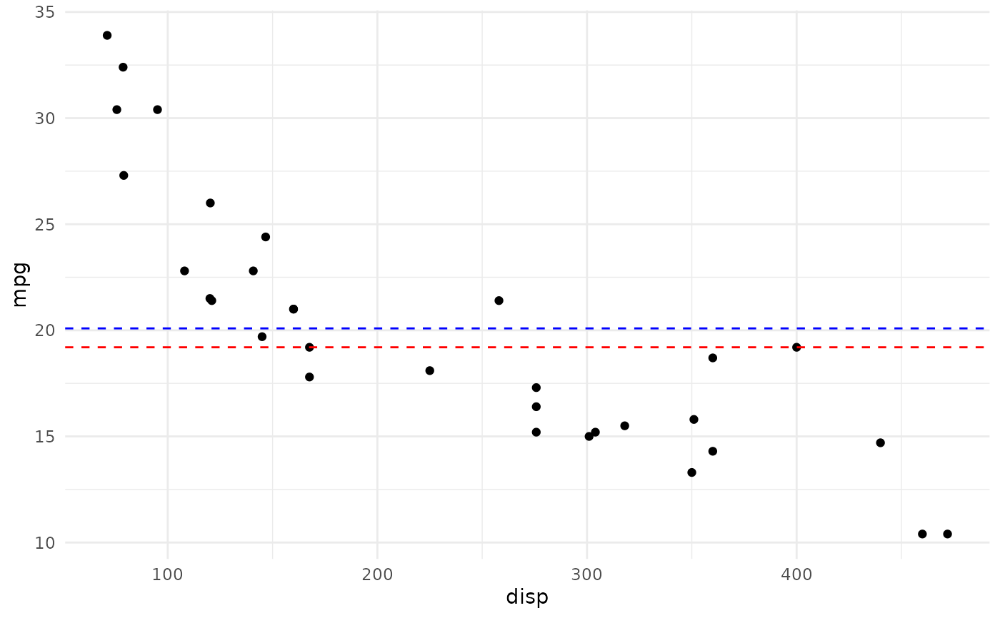
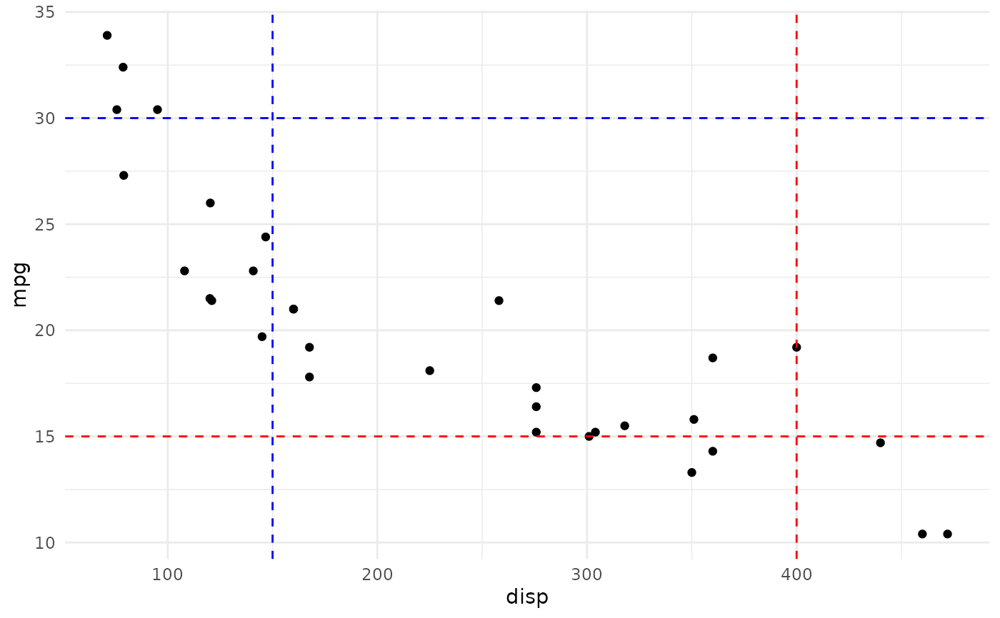

These geoms can be used to draw horizontal or vertical reference
lines in a ggplot. They use the data in the aesthetics v_var and h_var
to compute their median or mean and draw the as a line.
geom_median_lines( mapping = NULL, data = NULL, ..., na.rm = FALSE, show.legend = NA, inherit.aes = TRUE ) geom_mean_lines( mapping = NULL, data = NULL, ..., na.rm = FALSE, show.legend = NA, inherit.aes = TRUE )
Arguments
| mapping | |
|---|---|
| data | The data to be displayed in this layer. There are three options: If A A |
| ... | Other arguments passed on to |
| na.rm | If |
| show.legend | logical. Should this layer be included in the legends?
|
| inherit.aes | If |
Aesthetics
geom_median_lines() and geom_mean_lines() understand the following
aesthetics (at least one of the bold aesthetics is required):
v_var - The variable for which to compute the median/mean that is drawn as vertical line.
h_var - TThe variable for which to compute the median/mean that is drawn as horizontal line.
alpha = NA- The alpha channel, i.e. transparency level, as a numerical value between 0 and 1.color = "red"- The color of the drawn lines.linetype = 2- The linetype of the drawn lines.size = 0.5- The size of the drawn lines.
See also
The underlying ggplot2 geoms geom_hline() and geom_vline()
Examples
library(nflplotR) library(ggplot2) # inherit top level aesthetics ggplot(mtcars, aes(x = disp, y = mpg, h_var = mpg, v_var = disp)) + geom_point() + geom_median_lines() + geom_mean_lines(color = "blue") + theme_minimal()# draw horizontal line only ggplot(mtcars, aes(x = disp, y = mpg, h_var = mpg)) + geom_point() + geom_median_lines() + geom_mean_lines(color = "blue") + theme_minimal()# draw vertical line only ggplot(mtcars, aes(x = disp, y = mpg, v_var = disp)) + geom_point() + geom_median_lines() + geom_mean_lines(color = "blue") + theme_minimal()# choose your own value ggplot(mtcars, aes(x = disp, y = mpg)) + geom_point() + geom_median_lines(v_var = 400, h_var = 15) + geom_mean_lines(v_var = 150, h_var = 30, color = "blue") + theme_minimal()